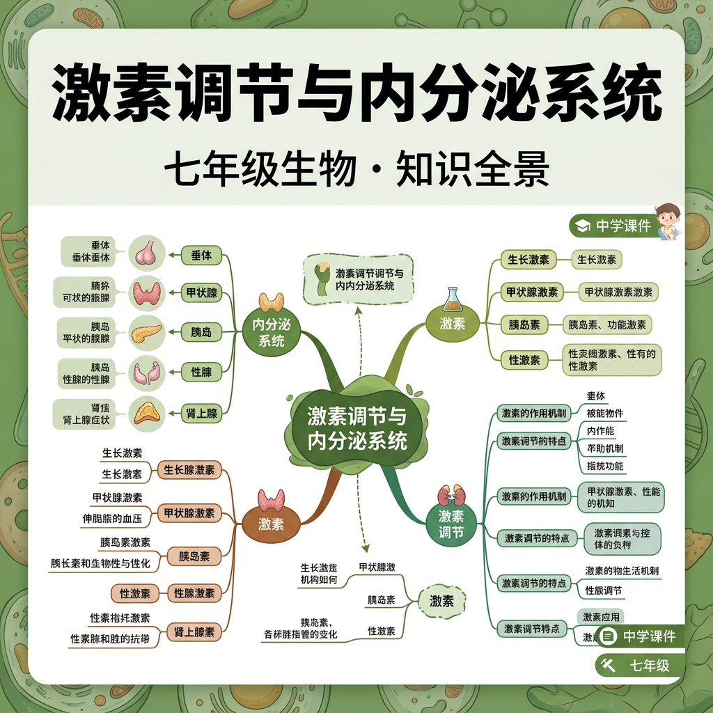

探索人体的"化学信使"——激素如何在血液中传递指令，精确调控生命活动

用 ABT 叙事框架了解本节课的核心问题
35 min
含动画演示 · 配对练习 · 3道测验题
激素是内分泌腺分泌的化学物质，通过体液（血液）运输调节生命活动
👆 动画演示激素随血液循环到达靶器官的过程
| 比较项目 | 神经调节 | 激素调节 |
|---|---|---|
| 信号类型 | 电信号（神经冲动） | 化学信号（激素） |
| 传递途径 | 神经纤维 | 血液循环 |
| 反应速度 | 快（毫秒级） | 慢（分钟至小时） |
| 作用时间 | 短暂 | 持久 |
| 作用范围 | 精确、局限 | 弥散、广泛 |
| 关系 | 两者相互配合，共同维持稳态（神经-体液调节） | |
点击下方人体图中的各内分泌腺，了解其分泌的激素和功能
👆 点击各内分泌腺了解激素功能
| 内分泌腺 | 位置 | 主要激素 | 功能 | 分泌异常 |
|---|---|---|---|---|
| 垂体 | 脑底部 | 生长激素、促激素 | 控制生长发育，调控其他腺体 | 幼年过少→侏儒症；过多→巨人症 |
| 甲状腺 | 颈部 | 甲状腺激素 | 促进新陈代谢、神经系统发育 | 幼年缺乏→呆小症；成年过多→甲亢 |
| 胰岛 | 胰腺内 | 胰岛素（B细胞）、胰高血糖素（A细胞） | 调节血糖浓度 | 胰岛素不足→糖尿病 |
| 肾上腺 | 肾脏上方 | 肾上腺素 | 应激反应，提高心率和血压 | 影响应激能力 |
| 性腺 | 生殖器官 | 雌激素、雄激素 | 促进第二性征发育 | 青春期发育异常 |
正常血糖浓度约为 0.8~1.2 g/L，胰岛素与胰高血糖素相互拮抗，维持血糖稳定
👆 动画展示饭后/饥饿时血糖的调节过程
将下方激素拖放到对应的内分泌腺框中
从下方激素列表中将每个激素拖放到正确的内分泌腺卡片中
共3题，检验你对内分泌系统知识的掌握情况
完成测验后查看得分
内分泌调节在人体调节体系中的位置